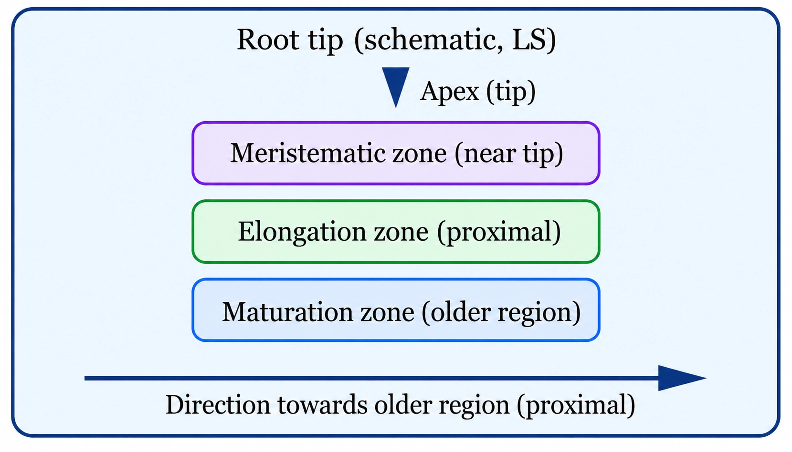
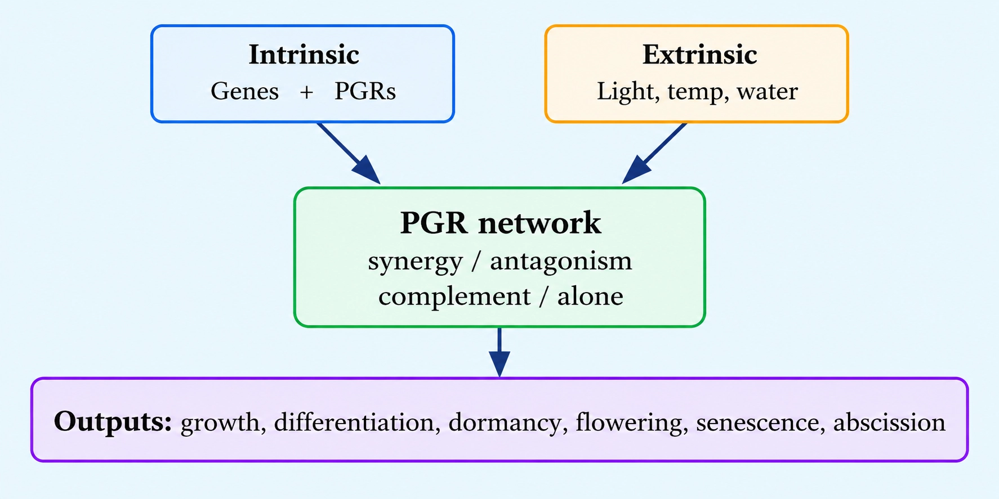
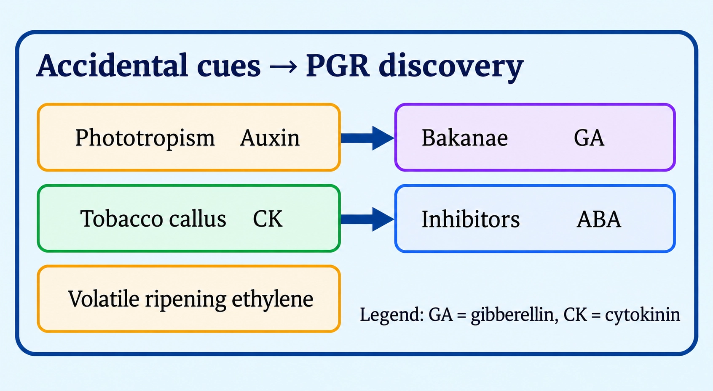
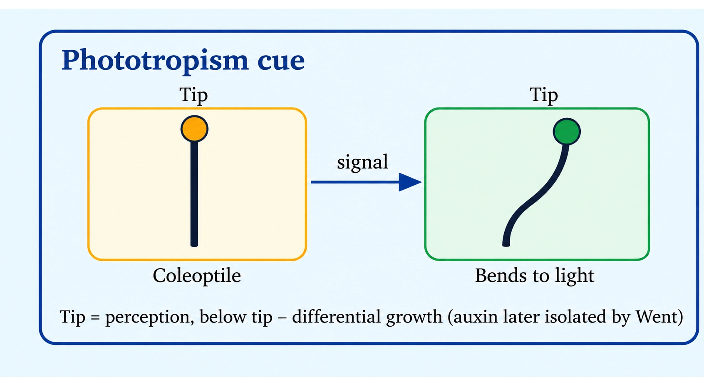
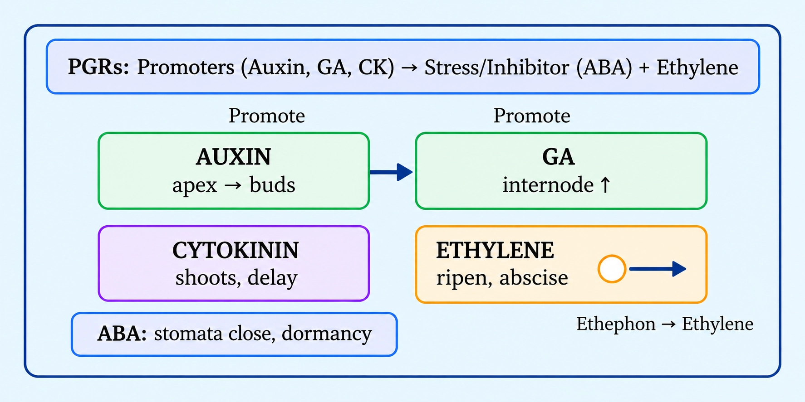

Biology
Plant Growth and Development (Chapter 13): Introduction
Development = growth + differentiation across an ordered life cycle
GROWTH VS DEVELOPMENT (PLANTS)
📖Definition & Introduction
- Plant development is the sum of growth + differentiation across the life cycle (and includes maturation, senescence and death).
- Growth is an irreversible, permanent increase in size of a cell/organ, generally accompanied by metabolic processes and energy use.
- From zygote to mature plant, events occur in a precise, highly ordered sequence, producing complex body organisation.
- Seed germination is the first step in plant growth; it begins only under favourable environmental conditions.
- If conditions are unfavourable, seeds enter a period of suspended growth/rest; when favourable conditions return, metabolic activity and growth resume.
- Developmental processes are controlled by intrinsic (internal) and extrinsic (environmental) factors.
🖼️Diagram
🎯Key Concepts
- 🧩Exam line: Do not equate development with growth alone; differentiation is essential.
- 🧬Intrinsic factors: genetic factors + internal chemical regulators (including plant growth regulators).
- 🌦️Extrinsic factors: light, temperature, water, oxygen, nutrition; these can control stages like germination.
- ⏸️Dormancy/rest: metabolic activities remain very low; growth pauses until conditions improve.
- 🪴Bean seedling shows orderly appearance of seed coat, cotyledons, hypocotyl, epicotyl and often an epicotyl hook relative to the soil line.
🔎SEED GERMINATION IN CONTEXT (REST → RESUME)
- Seed germinates only when favourable conditions (water, oxygen, suitable temperature) exist.
- If conditions are unfavourable, seed enters suspended growth/rest.
- When favourable conditions return, metabolism restarts and growth resumes.
- Rest helps survival through adverse periods (cold, drought, low oxygen).
⚙️BEAN SEEDLING: ORDERED APPEARANCE OF PARTS
- During germination and seedling development, structures appear in an orderly pattern relative to the soil line.
- Hypocotyl: region below cotyledons; often forms an arch during emergence.
- Epicotyl: region above cotyledons; often shows an epicotyl hook that protects the plumule.
- Such orderly change is development (not only an increase in size).
⚖️GROWTH vs DEVELOPMENT (EXAM FAVOURITE)
| Basis | Growth | Development |
|---|---|---|
| Core idea | Irreversible, permanent increase in size of a cell/organ; generally accompanied by metabolism and energy use | Sum of all life-cycle changes; includes growth + differentiation (also maturation, senescence, death) |
| Includes differentiation? | No | Yes (plus maturation, senescence) |
| Typical example | Leaf expansion (true growth) | Zygote → embryo/seed → germination → seedling → mature plant → senescence → death |
| Common trap | Calling any swelling “growth” (e.g., imbibition) | Treating development as growth alone (missing differentiation) |
| Control | Intrinsic + extrinsic factors | Intrinsic + extrinsic factors (stage-specific integration) |
✏️Solved Q&A
1
Why is it incorrect to define plant development as only an increase in size?
Answer:
Size increase alone describes growth.
Development includes growth plus differentiation into specialised tissues and organs.
It also includes later changes like maturation, senescence and death across the life cycle.
Size increase alone describes growth.
Development includes growth plus differentiation into specialised tissues and organs.
It also includes later changes like maturation, senescence and death across the life cycle.
✓ Because development is broader than growth: it includes growth + differentiation (and subsequent life-cycle changes), not only size increase.
2
A seed does not germinate in dry soil for weeks, but germinates quickly after watering. Explain using key terms.
Answer:
Dry soil is an unfavourable extrinsic condition (water limitation), so germination does not begin.
The seed enters suspended growth/rest with very low metabolic activity.
After watering, favourable conditions return, metabolism resumes and germination starts (first step in plant growth).
Dry soil is an unfavourable extrinsic condition (water limitation), so germination does not begin.
The seed enters suspended growth/rest with very low metabolic activity.
After watering, favourable conditions return, metabolism resumes and germination starts (first step in plant growth).
✓ The seed was in suspended growth/rest due to unfavourable external conditions; watering restores favourable conditions, restarting metabolism and triggering germination.
⭐Important Points
- Development = growth + differentiation; do not write development = growth.
- Development occurs through a precise, highly ordered succession from zygote to mature plant and ultimately death.
- Seed germination is the first step in plant growth and needs favourable environmental conditions.
- Unfavourable conditions can cause rest/suspended growth; when conditions return, growth resumes.
- Control is by intrinsic (genetic + internal chemical regulators) and extrinsic (environmental) factors.
💡Memory Technique
“Mnemonic: DeV = G + Di”
📌Quick Recap
Development (plants): sum of all changes during life cycle; includes growth + differentiation + maturation + senescence + death.Growth: irreversible, permanent increase in size of a cell/organ; generally accompanied by metabolism and energy use.Ordered life cycle: zygote → embryo/seed → germination → seedling → mature plant → senescence → death.Seed germination: first step in plant growth; occurs only under favourable environmental conditions.Suspended growth/rest: unfavourable conditions stop germination; return of favourable conditions restarts metabolism and growth.Control factors: intrinsic (genetic + internal chemical regulators) and extrinsic (light, temperature, water, O2, nutrition).Bean seedling: hypocotyl below cotyledons; epicotyl above; epicotyl hook often protects the plumule.
Irreversible, permanent size increase linked with metabolism (not mere water swelling)
GROWTH: DEFINITION AND NATURE
📖Definition & Introduction
- Growth is an irreversible and permanent increase in size of an organ, its parts, or a cell.
- True growth is generally accompanied by metabolic processes and occurs at the expense of energy.
- At cellular level, growth mainly reflects an increase in protoplasmic material (living content).
- Growth includes both anabolic (biosynthesis) and catabolic (breakdown) activities as parts of metabolism.
- A mere increase in size due to water absorption (e.g., imbibition) is not considered true growth.
🖼️Diagram
🎯Key Concepts
- 🔒Key hallmark: irreversible + permanent size increase.
- ⚙️True growth is metabolism-linked: involves synthesis, breakdown, and regulation in living cells.
- 🔋Growth needs energy; new biomass is produced by metabolic work.
- 🧫Core basis: protoplasmic increase (not just water entry into dead walls).
- 🍃Leaf expansion is true growth: permanent enlargement with active metabolism.
- 🪵Wood swelling in water is mainly imbibition: physical swelling, not true growth.
🔎WHAT MAKES GROWTH “TRUE”?
- Irreversible: size does not return to original on removing the cause.
- Permanent: reflects addition of living material, not a temporary state.
- Metabolism-linked: requires enzyme-driven reactions inside living cells.
- Energy expense: biomass formation needs ATP generated by respiration.
- Cellular basis: increase in protoplasm accompanies enlargement/division.
⚙️WHY IMBIBITION IS NOT TRUE GROWTH
- Imbibition = absorption of water by hydrophilic substances (cell walls, dead tissues).
- Size increases mainly due to swelling, not formation of new protoplasm.
- Typically reversible: drying can reduce size towards original.
- Example: swelling of a piece of wood kept in water is a physical change.
⚖️TRUE GROWTH vs IMBIBITION-BASED SWELLING
| Basis | True growth | Imbibition swelling |
|---|---|---|
| Nature | Irreversible and permanent increase | Mostly temporary physical enlargement |
| Link with life | Occurs in living cells/tissues | Can occur in dead tissues (e.g., wood) |
| Underlying cause | Metabolic activity; protoplasm increases | Water absorption by hydrophilic walls/colloids |
| Energy use | Requires energy expenditure (ATP via respiration) | No direct metabolic energy requirement |
| Example | Leaf expansion | Swelling of wood in water |
✏️Solved Q&A
1
A dry piece of wood becomes thicker after soaking in water. Is this growth? Give reason.
Answer:
Identify criterion: growth must be irreversible + permanent and linked with metabolism.
Wood swelling occurs mainly by imbibition (water absorption) in largely non-living tissue.
No significant protoplasmic increase or metabolic biomass formation is involved.
Identify criterion: growth must be irreversible + permanent and linked with metabolism.
Wood swelling occurs mainly by imbibition (water absorption) in largely non-living tissue.
No significant protoplasmic increase or metabolic biomass formation is involved.
✓ No. It is imbibition-based swelling (physical water uptake), not true growth.
2
Leaf expansion in a young plant is called true growth. Justify using two features.
Answer:
Leaf expansion involves metabolic activity (biosynthesis of cell contents and wall material).
It is irreversible and permanent; the enlarged leaf does not return to its original size.
Leaf expansion involves metabolic activity (biosynthesis of cell contents and wall material).
It is irreversible and permanent; the enlarged leaf does not return to its original size.
✓ Leaf expansion is irreversible/permanent and metabolism-linked with increase in living (protoplasmic) material.
⭐Important Points
- Definition in exams: irreversible + permanent increase in size (organ/part/cell).
- Always mention: growth is generally accompanied by anabolic and catabolic processes.
- Growth occurs at the expense of energy; link to respiration supplying ATP.
- At cellular level, true growth reflects increase in protoplasm (living matter).
- Contrast example: leaf expansion is true growth; wood swelling is imbibition.
💡Memory Technique
“Mnemonic: GROW = G-R-O-W”
R = Remains (permanent)
W = Work/energy needed
📌Quick Recap
Growth: irreversible and permanent increase in size (cell/organ/part).True growth is metabolism-linked and involves energy expense.Cellular basis: increase in protoplasm (living material).Leaf expansion = true growth (permanent, metabolic).Wood swelling in water = imbibition (physical water uptake), not true growth.
Open growth in plants: continuous cell addition by meristems; primary vs secondary growth by location
MERISTEMS AND INDETERMINATE GROWTH
📖Definition & Introduction
- Indeterminate (open) growth is unlimited growth due to persistent meristems adding new cells throughout life.
- Meristematic cells are actively dividing and self-perpetuating (one lineage remains meristem).
- Daughter cells produced from meristems soon lose division capacity and differentiate into tissues.
- Primary growth increases length of root/shoot axes, mainly by apical meristems.
- Secondary growth increases girth, mainly by lateral meristems that become active later.
🖼️Diagram
🎯Key Concepts
- ♾️Open form of growth = continuous addition of new cells to the plant body by active meristems.
- 🧬Meristems maintain a dividing population: cells divide and a subset stays meristematic (self-perpetuate).
- 📍Location decides role: apical meristems → elongation; lateral meristems → thickening.
- 🌿Root apical meristem (RAM) and shoot apical meristem (SAM) drive primary growth.
- 🪵Vascular cambium and cork cambium drive secondary growth (typical of dicots and gymnosperms).
🔎WHY PLANTS SHOW INDETERMINATE (OPEN) GROWTH
- Meristems persist at specific sites, so new cells keep getting added to the body.
- Meristematic cells divide and self-perpetuate; all products are not consumed in differentiation.
- If a meristem stops dividing, cell addition ceases and growth of that axis/region halts.
- Contrast: most animals show determinate growth after maturity; plants retain lifelong growth potential.
⚙️MERISTEM TYPES BY POSITION (EXAM-ORIENTED)
- Root apical meristem (RAM): at root tip; produces primary tissues for root elongation.
- Shoot apical meristem (SAM): at shoot tip; produces primary tissues for shoot elongation and organ initiation.
- Vascular cambium: lateral meristem; forms secondary vascular tissues; increases girth.
- Cork cambium: lateral meristem; forms periderm (protective tissues); increases girth.
⚖️Primary Growth vs Secondary Growth (via Meristems)
| Basis | Primary growth | Secondary growth |
|---|---|---|
| Main change | Increase in length along axis | Increase in girth (thickness) |
| Key meristems | SAM and RAM (apical meristems) | Vascular cambium and cork cambium (lateral meristems) |
| Meristem position | At tips of shoot and root | Along sides of stems/roots |
| Timing | Active from early growth stages | Often appears/strengthens later in life |
| Typical occurrence | In most vascular plants | Prominent in dicots and gymnosperms |
✏️Solved Q&A
1
A shoot tip is damaged so that the shoot apical meristem is destroyed. Predict the effect on growth of that shoot axis and justify.
Answer:
SAM is the source of new cells for primary growth (elongation) of the shoot axis.
Without SAM division, no new cells are added to the shoot apex.
Therefore, further elongation of that shoot axis stops; existing tissues may only mature/differentiate.
SAM is the source of new cells for primary growth (elongation) of the shoot axis.
Without SAM division, no new cells are added to the shoot apex.
Therefore, further elongation of that shoot axis stops; existing tissues may only mature/differentiate.
✓ Elongation (primary growth) of that shoot axis will halt because the SAM is the self-perpetuating source of new cells.
2
An examiner shows a dicot stem that has increased in thickness over time. Name the meristems responsible and state why this is called secondary growth.
Answer:
Increase in thickness/girth is due to lateral meristems.
The key lateral meristems are vascular cambium and cork cambium.
They become active later and add tissues on the sides, hence the growth is termed secondary.
Increase in thickness/girth is due to lateral meristems.
The key lateral meristems are vascular cambium and cork cambium.
They become active later and add tissues on the sides, hence the growth is termed secondary.
✓ Vascular cambium and cork cambium; thickening by lateral meristems (often later in life) is secondary growth.
⭐Important Points
- Indeterminate/open growth is a direct outcome of persistent meristems at fixed locations.
- Meristematic cells divide + self-perpetuate; their derivatives soon differentiate and stop dividing.
- SAM and RAM are responsible for primary growth (elongation of axes).
- Vascular cambium and cork cambium are lateral meristems responsible for secondary growth (girth).
- Secondary growth is characteristically prominent in dicotyledonous plants and gymnosperms.
💡Memory Technique
“Mnemonic: Apex adds Length; Laterals add Girth”
📌Quick Recap
Open/indeterminate growth: continuous cell addition by meristems throughout life.Meristematic cells: actively divide and self-perpetuate; derivatives differentiate and lose division.SAM (shoot apex) + RAM (root tip) → primary growth (elongation).Vascular cambium + cork cambium → secondary growth (girth).If meristem division stops → growth of that region stops (no new cells added).
Growth is measurable using proxies of protoplasm increase: pick the parameter that matches the structure
MEASURING PLANT GROWTH
📖Definition & Introduction
- Plant growth is an irreversible, permanent increase linked with metabolism; measured via measurable proxies.
- At cellular level, growth mainly reflects an increase in protoplasm (living content).
- Direct protoplasm measurement is difficult, so we use roughly proportional parameters (mass, length, area, volume, cell number).
- Different organs show growth best in different dimensions (e.g., tube-like → length; flat → area).
- Extremes: growth may be dominated by cell division (↑ cell number) or cell enlargement (↑ cell size).
🖼️Diagram
Protoplasm increase is inferred using mass, dimensions, or cell-based growth parameters.
🎯Key Concepts
- ⚖️Mass-based measures: fresh weight includes water; dry weight reflects true biomass gain.
- 📐Dimension-based measures: length, area, volume chosen as per organ geometry.
- 🧫Cell-based measures: growth can be expressed as increase in cell number or increase in cell size.
- 🌽Extreme cell-number increase: maize root apical meristem produces > 17,500 cells per hour.
- 🍉Extreme cell-size increase: a watermelon cell may enlarge up to 3,50,000×.
- 🌼Structure-matching: pollen tube growth is best tracked as increase in length.
🔎WHAT TO MEASURE (PARAMETERS LIST)
- Increase in fresh weight: quick field proxy; strongly affected by water content (turgor).
- Increase in dry weight: best proxy for new organic matter (biomass) after removing water.
- Increase in length: suited for linear organs (roots, stems, pollen tube).
- Increase in area: suited for flat organs (dorsiventral leaves).
- Increase in volume: suited for bulky organs (fruits, storage organs) and cell expansion.
⚙️MATCH PARAMETER ↔ STRUCTURE (EXAM-FAVOURITE LINKS)
- Pollen tube → track length (tip growth; fastest visible elongation).
- Dorsiventral leaf lamina → track area (surface expansion dominates).
- Fruits/tubers → track volume (cell enlargement + storage accumulation).
- Seedlings/whole plant → track dry weight for true biomass gain over time.
- Meristems → track cell number; e.g., maize root apical meristem > 17,500 cells/hour.
⚖️CELL NUMBER INCREASE vs CELL SIZE INCREASE (GROWTH EXTREMES)
| Basis | Increase in cell number (division-dominated) | Increase in cell size (enlargement-dominated) |
|---|---|---|
| Primary driver | Repeated mitosis in meristems | Cell expansion with vacuolation; more cytoplasm + wall |
| Best measurement | Cell counts; mitotic output per unit time | Cell dimensions/volume; organ volume/area proxies |
| Classic example | Maize root apical meristem: > 17,500 new cells/hour | Watermelon cell enlargement: up to 3,50,000× |
| What it indicates | High meristem activity; rapid addition of new cells | Great enlargement of existing cells; strong water and wall deposition role |
✏️Solved Q&A
1
An experiment tracks growth of (i) pollen tube, (ii) leaf lamina, (iii) maize root apical region. Which growth parameter is most appropriate for each, and why?
Answer:
(i) Use increase in length because pollen tube is a narrow, elongating cell showing tip growth.
(ii) Use increase in area because a dorsiventral leaf expands mainly in surface dimensions.
(iii) Use increase in cell number because apical meristem growth reflects rapid cell division output.
(i) Use increase in length because pollen tube is a narrow, elongating cell showing tip growth.
(ii) Use increase in area because a dorsiventral leaf expands mainly in surface dimensions.
(iii) Use increase in cell number because apical meristem growth reflects rapid cell division output.
✓ (i) Length, (ii) Area, (iii) Cell number — each matches the dominant geometry/process.
2
A student reports plant growth using fresh weight only. The fresh weight rose sharply after heavy watering, but dry weight changed little. Interpret the result and state the correct inference about protoplasm/biomass.
Answer:
Fresh weight includes water uptake; sudden rise can reflect increased hydration/turgidity rather than new biomass.
Dry weight better represents synthesis/accumulation of organic matter (biomass), hence protoplasmic material gain.
Therefore, the observation suggests mainly water gain, not substantial formation of new plant material.
Fresh weight includes water uptake; sudden rise can reflect increased hydration/turgidity rather than new biomass.
Dry weight better represents synthesis/accumulation of organic matter (biomass), hence protoplasmic material gain.
Therefore, the observation suggests mainly water gain, not substantial formation of new plant material.
✓ The spike is largely hydration-driven; true biomass/protoplasm increase is indicated by dry weight, which barely rose.
⭐Important Points
- Growth is measured because protoplasm increase is hard to quantify directly.
- Always list multiple parameters: fresh wt, dry wt, length, area, volume, cell number.
- Use dry weight when asked for the best proxy of true biomass gain.
- Match parameter to organ: pollen tube → length; leaf lamina → area; fruits → volume.
- Remember extremes: maize root apical meristem > 17,500 cells/hour; watermelon cell up to 3,50,000× size.
💡Memory Technique
“Mnemonic: FLAVeN (what can increase)”
📌Quick Recap
Cellular basis: growth mainly due to increase in protoplasm (living content).Measurable parameters: ↑ fresh weight, ↑ dry weight, ↑ length, ↑ area, ↑ volume, ↑ cell number.Fresh weight is water-sensitive; dry weight best reflects true biomass gain.Extreme division: maize root apical meristem > 17,500 new cells/hour.Extreme enlargement: watermelon cell size may increase up to 3,50,000×.Structure matching: pollen tube → length; dorsiventral leaf → surface area.
Meristematic → Elongation → Maturation; locate elongation zone by parallel line technique
PHASES OF GROWTH (ROOT TIP MODEL)
📖Definition & Introduction
- Phases of growth are sequential regions in a growing root tip showing division, enlargement, and differentiation.
- Studied best in the root apex because these zones occur in a linear order from the tip towards older parts.
- Order from the tip backwards (towards older region): meristematic zone → elongation zone → maturation (differentiation) zone.
- Cells leaving the meristem lose the capacity to divide and show progressive vacuolation and wall/protoplasm changes.
- The parallel line technique identifies where maximum elongation occurs by observing the change in spacing of marks.
🖼️Diagram
From the apex towards older region: meristematic (division) → elongation (enlargement) → maturation (differentiation).
🎯Key Concepts
- 🧬Meristematic phase: rapid mitosis; rich protoplasm; large nuclei; thin primary cellulosic walls; many plasmodesmata.
- 💧Elongation phase: increased vacuolation drives cell enlargement; addition of primary wall material accompanies elongation.
- 🧱Maturation phase: cells attain maximal size; wall thickening and protoplasmic modifications lead to differentiation.
- 📏Parallel line technique: maximum increase in spacing identifies the elongation zone just behind the meristem.
🔎WHAT YOU SEE IN EACH PHASE (CELL FEATURES)
- Meristematic: small isodiametric cells; dense cytoplasm; large conspicuous nucleus; vacuoles absent or very small.
- Walls are primary, thin, cellulosic; plasmodesmata are abundant.
- Elongation: cells elongate rapidly; vacuolation increases and pushes cytoplasm to the periphery.
- Elongation: primary wall material is added so the wall can expand during elongation without losing functional integrity.
- Maturation: cells stop elongating; attain maximal size; show differentiation via wall thickening and protoplasmic changes.
⚙️PARALLEL LINE TECHNIQUE (TO LOCATE ELONGATION ZONE)
- Make equidistant parallel ink marks on a young root just behind the apex.
- After a fixed time, observe the change in spacing between successive marks.
- Maximum increase in spacing identifies the region of maximum elongation (elongation zone).
- Marks extremely close to the apex show little spacing change because division dominates and cells have not elongated much.
- Farther away, spacing changes less again because cells are in maturation and elongation has largely ceased.
⚖️MERISTEMATIC vs ELONGATION vs MATURATION (ROOT TIP)
| Basis | Meristematic phase | Elongation phase | Maturation phase |
|---|---|---|---|
| Position (from tip) | At/very near the apex (just behind root cap) | Just proximal to meristematic zone (away from tip) | Further proximal (older region; away from apex) |
| Main event | Cell division (mitosis) | Cell enlargement/elongation | Differentiation + functional maturity |
| Nucleus & cytoplasm | Large nucleus; dense cytoplasm (rich protoplasm) | Cytoplasm becomes peripheral; nucleus less conspicuous | Protoplasm modified as per specialised function |
| Vacuoles | Absent/very small | Vacuolation increases markedly | Large central vacuole typical (in many mature cells) |
| Cell wall status | Thin primary cellulosic walls | Addition of primary wall material during expansion/elongation | Wall thickening may occur as per tissue (often secondary wall in some tissues) |
| Outcome | Adds new cells | Increases length of root | Forms mature tissues (e.g., root hair zone in epidermis) |
✏️Solved Q&A
1
A student makes equal-spaced marks near a root tip. After 2 hours, spacing increases mainly between the middle marks, while spacing near the tip and far above shows little change. Identify the zones and justify.
Answer:
Little change very near the tip implies cells are mainly in division with minimal elongation → meristematic phase.
Region with maximum increase in spacing indicates greatest increase in cell length → elongation zone.
Little change farther from the tip indicates elongation has largely stopped and differentiation has occurred → maturation zone.
Little change very near the tip implies cells are mainly in division with minimal elongation → meristematic phase.
Region with maximum increase in spacing indicates greatest increase in cell length → elongation zone.
Little change farther from the tip indicates elongation has largely stopped and differentiation has occurred → maturation zone.
✓ Near tip = meristematic; region of maximum spacing increase = elongation; farther region with little change = maturation.
2
Give two cellular reasons why meristematic cells are suited for continuous division, and two changes that indicate entry into maturation.
Answer:
Meristematic cells have rich protoplasm and large conspicuous nuclei, supporting active mitosis and high metabolic activity.
They possess thin, primary cellulosic walls, allowing repeated cytokinesis and formation of new cells.
Entry into maturation is indicated by wall thickening and protoplasmic modifications leading to specialised cell structure/function.
Meristematic cells have rich protoplasm and large conspicuous nuclei, supporting active mitosis and high metabolic activity.
They possess thin, primary cellulosic walls, allowing repeated cytokinesis and formation of new cells.
Entry into maturation is indicated by wall thickening and protoplasmic modifications leading to specialised cell structure/function.
✓ Division suitability: dense cytoplasm + large nucleus; thin primary wall. Maturation signs: wall thickening + protoplasmic modification/differentiation.
⭐Important Points
- In a root, growth phases occur in a fixed linear sequence from the apex towards older regions.
- Meristematic phase: active mitosis; dense protoplasm; large nuclei; thin primary cellulosic walls; abundant plasmodesmata.
- Elongation phase: vacuolation and rapid cell enlargement; addition of primary wall material during expansion.
- Maturation phase: maximal cell size; wall thickening and protoplasmic modifications; differentiated tissues appear.
- Proximal means away from the tip towards older regions; elongation zone is proximal to the meristematic zone.
💡Memory Technique
“MEM: Di–En–Ma (Divide–Enlarge–Mature)”
📌Quick Recap
Sequence from root tip towards older region: Meristematic → Elongation → Maturation.Meristematic zone: mitosis; dense cytoplasm; large nucleus; thin primary cellulosic wall; abundant plasmodesmata.Elongation zone: increased vacuolation; rapid cell enlargement; addition of primary wall material during expansion.Maturation zone: cells attain maximal size; wall thickening and protoplasmic modifications; tissues differentiate.Parallel line technique: region showing maximum increase in spacing between marks indicates maximum elongation.
Arithmetic vs geometrical growth, their curves, and AGR vs RGR comparisons
GROWTH RATES AND CURVES
📖Definition & Introduction
- Growth rate = increase in a growth parameter per unit time (length/area/weight/cell number).
- Arithmetic growth: constant addition per unit time → straight line (linear) curve.
- Geometrical growth: increase proportional to present size → exponential rise; in nature becomes sigmoid due to limitations.
- Sigmoid (S) curve shows lag → log/exponential → stationary phases.
- Absolute growth rate (AGR) compares total gain per time; relative growth rate (RGR) compares gain per time per initial size.
🖼️Diagram
🎯Key Concepts
- ⏱️Same time interval can give same AGR but different RGR if starting sizes differ.
- 📏Arithmetic growth fits Lt vs t as a straight line; slope = r.
- 🧫Geometrical growth assumes both daughter cells keep dividing → multiplication of size/number.
- 🧪Pure exponential is ideal; real systems approach plateau (stationary phase) → S-curve.
- ⚖️In W1=W0ert, r is the (constant) relative growth rate.
🔎ARITHMETIC GROWTH (LINEAR CURVE)
- After mitosis: one daughter cell keeps dividing; other differentiates/matures.
- Increase per unit time is constant → straight line for size vs time.
- Slope of line = constant growth rate r (units: size per time).
⚙️GEOMETRICAL GROWTH (EXPONENTIAL → SIGMOID IN NATURE)
- After mitosis: both progeny cells divide → growth proportional to present size.
- Phases on time plot: lag (slow) → log/exponential (fast) → stationary (plateau).
- Sigmoid curve indicates resource limitation (nutrients/space) as growth proceeds.
⚖️Arithmetic vs Geometrical Growth AND AGR vs RGR
| Basis | Arithmetic growth | Geometrical growth |
|---|---|---|
| Cell-division pattern | One daughter divides; other differentiates | Both daughters keep dividing |
| Increase per unit time | Constant addition | Proportional to present size |
| Ideal curve (size vs time) | Straight line (linear) | Exponential curve |
| Natural outcome | Often linear over short range | Often sigmoid (S-curve) due to stationary phase |
| Rate term used | Often expressed as constant r (size per time) | r is RGR (per time), constant in ideal exponential |
| Rate comparison | AGR: ΔWΔt | RGR: 1WΔWΔt |
🧮Formulas
Arithmetic growth assumes constant addition per time:
ΔLΔt=r ⇒ Lt=L0+rt
Geometrical (exponential) growth assumes rate ∝ present size:
dWdt=rW ⇒ ∫dWW=∫rdt ⇒ lnW=rt+C
Using W=W0 at t=0 gives C=lnW0:
Wt=W0ert
AGR and RGR (instantaneous form):
AGR=dWdt ; RGR=1WdWdt
| Lt = | Length (or any linear size) at time t |
| L0 = | Initial length at t=0 |
| W0, Wt = | Initial and final size (weight/area/number etc.) |
| r = | Growth rate; in exponential model it is RGR (per unit time) |
| t = | Time interval |
| e = | Base of natural logarithms (≈ 2.718) |
Core exponential law (geometrical growth)
Wt=W0ert
📈Graph
Size vs time: arithmetic gives a straight line; geometrical gives an exponential rise (ideal).
✏️Solved Examples
1
A root segment shows arithmetic growth. Its length is 3.0 cm at t=0 and becomes 9.0 cm after 12 h. Find r and predict length after 20 h.
Solution:
Use Lt=L0+rt
9.0 = 3.0 + r(12) ⇒ r=6.012=0.5 cm h−1
L20=3.0 + 0.5×20 = 3.0 + 10.0 = 13.0 cm
Use Lt=L0+rt
9.0 = 3.0 + r(12) ⇒ r=6.012=0.5 cm h−1
L20=3.0 + 0.5×20 = 3.0 + 10.0 = 13.0 cm
✓ r=0.5 cm h−1; predicted length after 20 h = 13.0 cm.
2
A culture shows geometrical growth with W0=2.0 g and r=0.20 h−1. Find mass after 5 h. Also find RGR at t=5 h (ideal exponential).
Solution:
Use Wt=W0ert ⇒ W5=2.0×e0.20×5=2.0×e1
e1≈2.718 ⇒ W5≈2.0×2.718=5.436 g ≈ 5.44 g
For ideal exponential growth, RGR is constant and equals r, independent of time.
Use Wt=W0ert ⇒ W5=2.0×e0.20×5=2.0×e1
e1≈2.718 ⇒ W5≈2.0×2.718=5.436 g ≈ 5.44 g
For ideal exponential growth, RGR is constant and equals r, independent of time.
✓ Mass after 5 h ≈ 5.44 g; RGR at 5 h = 0.20 h−1.
⭐Important Points
- Arithmetic growth is defined by constant addition per time, not by being "slow" or "fast".
- Geometrical growth is exponential in the ideal model, but real growth usually becomes sigmoid (S-curve).
- Sigmoid curve phases: lag → log/exponential → stationary (resource limitation).
- If two systems gain the same absolute amount in same time, the smaller starter has higher RGR.
- In Wt=W0ert, final size depends strongly on W0.
💡Memory Technique
“A-G-S = Add, Grow, Saturate”
🧮Formula Sheet
Growth rate: increase in a parameter per unit time.Arithmetic growth: Lt=L0+rt (linear curve).Geometrical (exponential) growth: Wt=W0ert.Sigmoid phases: lag → log/exponential → stationary.AGR: ΔWΔt ; RGR: 1WΔWΔt.For ideal exponential growth, RGR = constant r (per unit time).
Resources + environmental signals that keep cells turgid, respiring and synthesising protoplasm
CONDITIONS FOR GROWTH
📖Definition & Introduction
- Conditions for growth = adequate resources (water, O2, nutrients) + suitable environmental conditions/signals (temperature, light, gravity) enabling cell enlargement and metabolism.
- Growth needs water status to maintain turgidity, the mechanical force for extension growth.
- Oxygen is essential for respiration to release metabolic energy for growth activities.
- Mineral nutrients (macro + micro) are required for protoplasm synthesis and also support energy metabolism.
- Each plant shows an optimum temperature range; deviation reduces enzyme efficiency and can harm survival.
- Light and gravity act as environmental signals that regulate stage-specific growth responses.
🖼️Diagram
🎯Key Concepts
- 💧Water → turgor pressure drives cell expansion; also a medium for enzymatic reactions.
- 🫁O2 → aerobic respiration supplies ATP for biosynthesis, transport and cell wall formation.
- 🧪Nutrients → build protoplasm (proteins, nucleic acids, membranes) and activate enzymes.
- 🌡️Temperature → growth peaks at an optimum range; too low slows enzymes, too high denatures proteins.
- ☀️Light → signal for photomorphogenesis; also supports photosynthate supply in green tissues.
- ⬇️Gravity → signal for directional growth (roots positive, shoots negative gravitropism).
🔎RESOURCE REQUIREMENTS (WHAT THE PLANT MUST HAVE)
- Water: cell enlargement needs water uptake; turgidity provides force for extension growth.
- Growth is tightly linked to plant water status; dehydration reduces turgor and slows elongation.
- Water serves as reaction medium for enzymes and enables transport of solutes to growing regions.
- O2: required for aerobic respiration to release energy for biosynthesis and active transport.
- Nutrients: essential elements needed for protoplasm synthesis and enzyme/cofactor function.
⚙️ENVIRONMENTAL CONDITIONS / SIGNALS (WHAT MUST BE SUITABLE)
- Temperature: each species has an optimum range for growth; extremes are detrimental.
- Low temperature → slow enzyme-controlled reactions; high temperature → protein/enzyme damage and membrane dysfunction.
- Light: acts as a signal affecting phases of growth; also supports carbohydrate supply via photosynthesis in green tissues.
- Gravity: provides directional cue for organ growth (tropic responses), especially during seedling establishment.
- Many extrinsic factors influence growth by changing internal regulation and metabolism of growing tissues.
⚖️RESOURCE vs SIGNAL: HOW THEY CONTROL GROWTH
| Basis | Resources (must be supplied) | Environmental conditions/signals (must be suitable) |
|---|---|---|
| Main role | Provide raw materials + energy sources for protoplasm increase | Set the operating conditions and cues for growth responses |
| Key examples | Water, O2, mineral nutrients | Temperature, light, gravity |
| Direct link to growth | Water → turgor → extension; nutrients → biosynthesis; O2 → respiration | Controls enzyme rates and directs stage-specific growth (e.g., tropisms) |
| If limiting | Meristem/elongation slows even if signals are present | Growth may be abnormal or suppressed even with adequate resources |
✏️Solved Q&A
1
A seed has water and minerals but the soil is waterlogged and poorly aerated. Predict the effect on early growth and give the reason.
Answer:
Water can permit imbibition and turgor, but low O2 restricts aerobic respiration.
Less respiration → less metabolic energy for biosynthesis and active transport in the embryo/seedling.
Therefore radicle/plumule growth becomes slow, weak or may fail despite water availability.
Water can permit imbibition and turgor, but low O2 restricts aerobic respiration.
Less respiration → less metabolic energy for biosynthesis and active transport in the embryo/seedling.
Therefore radicle/plumule growth becomes slow, weak or may fail despite water availability.
✓ Early growth is inhibited mainly due to O2 shortage limiting respiration and ATP supply.
2
Why is swelling of dry wood in water not considered true growth, while leaf expansion is considered true growth?
Answer:
Swelling of wood is mainly due to imbibition: physical water absorption increases size without protoplasm increase.
Leaf expansion is irreversible and linked with metabolism: synthesis of cell wall and protoplasm accompanies enlargement.
Thus true growth requires metabolic, permanent increase, not mere water-driven swelling.
Swelling of wood is mainly due to imbibition: physical water absorption increases size without protoplasm increase.
Leaf expansion is irreversible and linked with metabolism: synthesis of cell wall and protoplasm accompanies enlargement.
Thus true growth requires metabolic, permanent increase, not mere water-driven swelling.
✓ Wood swelling is physical imbibition; leaf expansion involves metabolic protoplasm increase and is true growth.
⭐Important Points
- To answer conditions for growth, always mention both: resources + environmental conditions/signals.
- Turgidity is the immediate mechanical requirement for extension growth in enlarging plant cells.
- O2 is essential because growth is energy-expensive and depends on respiration.
- Nutrients are required for protoplasm synthesis and for enzyme/cofactor roles in metabolism.
- Each plant has an optimum temperature range; deviation reduces growth and may threaten survival.
💡Memory Technique
“Mnemonic: WON + TLG”
📌Quick Recap
Resources needed: Water + O2 + Nutrients.Water roles: turgidity for extension growth + medium for enzymatic activities.O2 role: respiration releases metabolic energy essential for growth.Nutrients (macro/micro): required for protoplasm synthesis and metabolic functioning.Environmental factors: optimum temperature range is critical; deviations reduce growth.Signals: light and gravity regulate specific phases and direction of growth.
How plant cells specialise, regain division, then specialise again (position decides fate)
DIFFERENTIATION PROCESSES
📖Definition & Introduction
- Differentiation is maturation of meristem-derived cells into structurally specialised, function-specific cells.
- During differentiation, changes occur in cell wall and protoplasm, from minor to major.
- Dedifferentiation: living differentiated cells regain ability to divide and form new meristematic tissue.
- Redifferentiation: cells produced by dedifferentiated meristems again mature and lose division capacity.
- Plant differentiation is often open: the same meristem can yield different mature cell types.
🖼️Diagram

🎯Key Concepts
- 🧬Structure–function link is central: specialised wall/protoplasm changes enable specific roles.
- 🪵Tracheary elements: loss of protoplasm + lignocellulosic secondary wall → water conduction under tension.
- 🔁Cycle idea: Differentiated (non-dividing) → dedifferentiation (dividing) → redifferentiation (specialised).
- 🧱Dedifferentiation examples: interfascicular cambium and cork cambium arise from parenchyma.
- 📍Position-dependent differentiation: cell fate depends on location within the organ.
🔎TRACHEARY ELEMENT: DIFFERENTIATION AS A CLASSIC EXAMPLE
- Meristem-derived cells become xylem tracheary elements by major wall + protoplasm modifications.
- Loss of protoplasm creates an empty lumen → lowers resistance for water flow.
- Lignocellulosic secondary wall provides strength and elasticity; prevents collapse under negative pressure.
- Exam framing: always state feature → function (wall lignification → tension resistance; dead cell → conduction).
⚙️DEDifferentiation → REDifferentiation (SECONDARY GROWTH CONTEXT)
- Dedifferentiation: parenchyma cells can regain division to form lateral meristems under suitable conditions.
- Interfascicular cambium forms from parenchyma between vascular bundles; contributes to vascular cambium ring.
- Cork cambium forms from parenchyma; produces protective tissues (periderm).
- Redifferentiation: derivatives of cambium/cork cambium mature into functional tissues and stop dividing.
⚖️Differentiation vs Dedifferentiation vs Redifferentiation
| Basis | Differentiation | Dedifferentiation | Redifferentiation |
|---|---|---|---|
| Starting cell | Meristem-derived young cells | Living differentiated cells | Cells formed by dedifferentiated meristem |
| Division capacity | Decreases; often becomes non-dividing | Regained (division restarts) | Lost again after maturation |
| Core change | Structural specialisation (wall + protoplasm) | Return to meristematic state | Specialisation into new functional cells |
| Key examples | Tracheary element formation | Interfascicular cambium; cork cambium | Cambial derivatives (e.g., secondary xylem/phloem); cork cells |
| Exam keyword | Specialise | Regain division | Specialise again |
✏️Solved Q&A
1
Explain why tracheary elements are considered highly differentiated cells. Mention two structural changes and relate them to function.
Answer:
State differentiation: meristem-derived cells mature with wall and protoplasmic modifications.
Tracheary element changes: loss of protoplasm (cell becomes dead) + lignocellulosic secondary wall deposition.
Link to function: dead, hollow lumen enables water flow; lignified thick wall prevents collapse under extreme tension.
State differentiation: meristem-derived cells mature with wall and protoplasmic modifications.
Tracheary element changes: loss of protoplasm (cell becomes dead) + lignocellulosic secondary wall deposition.
Link to function: dead, hollow lumen enables water flow; lignified thick wall prevents collapse under extreme tension.
✓ Tracheary elements show differentiation by becoming dead, hollow conductors with lignified secondary walls that withstand tension during water transport.
2
A student says: "Once a plant cell differentiates, it can never divide again." Correct the statement using dedifferentiation and give two examples.
Answer:
Correct idea: some living differentiated cells can regain division under certain conditions (dedifferentiation).
Example 1: differentiated parenchyma between vascular bundles forms interfascicular cambium.
Example 2: differentiated parenchyma forms cork cambium for protective tissue formation.
Add closure: cells produced by these meristems later redifferentiate into specialised, non-dividing tissues.
Correct idea: some living differentiated cells can regain division under certain conditions (dedifferentiation).
Example 1: differentiated parenchyma between vascular bundles forms interfascicular cambium.
Example 2: differentiated parenchyma forms cork cambium for protective tissue formation.
Add closure: cells produced by these meristems later redifferentiate into specialised, non-dividing tissues.
✓ The statement is wrong; plants show dedifferentiation (e.g., interfascicular cambium and cork cambium from parenchyma), followed by redifferentiation.
⭐Important Points
- Write Development = Growth + Differentiation; do not equate development with growth alone.
- Differentiation involves wall/protoplasm changes; always connect anatomy → function in answers.
- Tracheary element: loss of protoplasm + lignocellulosic secondary wall are must-mention points.
- Dedifferentiation forms meristems from differentiated cells: interfascicular cambium and cork cambium.
- Plants show open differentiation: same meristem can form different mature structures.
💡Memory Technique
“Mnemonic: Di–De–Re = Do → Divide → Re-do”
📌Quick Recap
Differentiation: meristem-derived cells mature into specialised cells via wall + protoplasm changes.Tracheary element: loss of protoplasm + lignocellulosic secondary wall → long-distance water conduction under tension.Dedifferentiation: living differentiated cells regain division (e.g., interfascicular cambium, cork cambium).Redifferentiation: cells from dedifferentiated meristems mature again and lose division capacity.Open differentiation: same meristem can form different mature tissues.Position-dependent fate (root): away from apex → root cap; periphery → epidermis.
One genotype, multiple forms: different developmental pathways across life stages or environments
PLASTICITY AND HETEROPHYLLY
📖Definition & Introduction
- Developmental plasticity is the ability of a plant to follow different developmental pathways in response to life stage or environment.
- Plasticity produces different structures (especially leaves) without changing the plant's genetic makeup.
- Heterophylly is the presence of different leaf forms on the same plant; it is a classic manifestation of plasticity.
- Heterophylly may be phase (ontogenetic): juvenile vs mature leaves differ in form.
- Heterophylly may be environmental: leaf form changes with conditions like air vs water.
🖼️Diagram
.
🎯Key Concepts
- 🧬Same genotype can show different phenotypes when developmental program shifts.
- 🌱Life-stage plasticity: juvenile leaves differ from mature leaves in several species.
- 🌊Environmental plasticity: leaf shape can change when submerged vs aerial.
- 🎯Exam framing: always link heterophylly → plasticity and state the cause (phase or environment).
🔎TYPES OF HETEROPHYLLY (WHAT CHANGES AND WHY)
- Phase (ontogenetic) heterophylly: leaf form changes as plant transitions juvenile → adult.
- Cause: age-dependent developmental program; not necessarily triggered by external change.
- Examples: cotton, coriander, larkspur show juvenile leaves different from mature leaves.
- Environmental heterophylly: leaf form depends on surrounding conditions (especially submerged vs aerial).
- Example: buttercup produces different leaves in air versus water.
⚙️EXAM USE: HOW TO WRITE A PERFECT 2-LINE ANSWER
- Line 1: Define plasticity as ability to follow different developmental pathways (life stage/environment).
- Line 2: State heterophylly is a classic example; specify phase-based or environmental with one example.
⚖️PHASE (ONTOGENETIC) VS ENVIRONMENTAL HETEROPHYLLY
| Basis | Phase (juvenile → mature) | Environmental (air ↔ water) |
|---|---|---|
| Primary trigger | Change in life stage/age | Change in external condition |
| Where seen | On same plant at different ages | On same plant in different habitats/positions |
| Key idea | Developmental program shifts with phase | Form adapts to current environment |
| Examples | Cotton, coriander, larkspur | Buttercup: aerial vs submerged leaves |
✏️Solved Q&A
1
A plant shows deeply lobed leaves at the juvenile stage but simpler leaves when adult. Name the phenomenon and the broader property it demonstrates.
Answer:
Different leaf forms on the same plant indicate heterophylly.
Because the change is with life stage (juvenile vs mature), it is phase/ontogenetic heterophylly.
Heterophylly is a classic example of developmental plasticity (different developmental pathways).
Different leaf forms on the same plant indicate heterophylly.
Because the change is with life stage (juvenile vs mature), it is phase/ontogenetic heterophylly.
Heterophylly is a classic example of developmental plasticity (different developmental pathways).
✓ Phenomenon: phase (ontogenetic) heterophylly; it demonstrates developmental plasticity.
2
Buttercup produces one leaf form when growing in air and another when submerged. How should you classify this and what is the exam-relevant linkage?
Answer:
Leaf form differs due to environment (air vs water), so it is environmental heterophylly.
State linkage explicitly: environmental heterophylly is an expression of plasticity (environment-driven pathway change).
Leaf form differs due to environment (air vs water), so it is environmental heterophylly.
State linkage explicitly: environmental heterophylly is an expression of plasticity (environment-driven pathway change).
✓ It is environmental heterophylly, and it is a classic manifestation of developmental plasticity.
⭐Important Points
- Plasticity = different developmental pathways due to environment or life stages.
- Heterophylly = different leaf forms on the same plant; classic example of plasticity.
- Always mention the cause: phase-based (juvenile vs mature) or environmental (air vs water).
- Examples to quote: cotton/coriander/larkspur (phase heterophylly); buttercup (environmental heterophylly).
- Use exam wording: "heterophylly is a manifestation of plasticity" + one example.
💡Memory Technique
“Mnemonic: PHE for Plasticity → Heterophylly → Environment”
📌Quick Recap
Plasticity: ability to follow different developmental pathways with stage or environment.Heterophylly: different leaf forms on the same plant.Phase (ontogenetic) heterophylly: juvenile leaves ≠ mature leaves (cotton, coriander, larkspur).Environmental heterophylly: air leaves ≠ water leaves (buttercup).Answer format: define plasticity → define heterophylly → specify type + one example.
What phytohormones are, how they are classified, and how intrinsic + extrinsic factors integrate via PGR interactions
PGR BASICS AND CONTROL
📖Definition & Introduction
- Plant growth regulators (PGRs) are small, simple molecules that regulate plant growth and development.
- Also called phytohormones, plant hormones, or plant growth substances.
- They have diverse chemistry: indole (IAA), adenine derivative (kinetin), carotenoid derivative (ABA), terpene (GA3), gas (ethylene, C2H4).
- They act at very low concentrations and can act away from the site of synthesis (signal-like control).
- Plant development is controlled by intrinsic factors (genetic + PGRs) and extrinsic factors (environment), often linked through PGR changes.
🖼️Diagram

🎯Key Concepts
- 🧪Functional groups: promoters (auxin, GA, cytokinin) vs inhibitor/stress (ABA); ethylene is largely inhibitory but context-dependent.
- 🧬Intrinsic control = genomic control + PGR network deciding growth, differentiation, dormancy, senescence.
- ☀️Extrinsic signals (light, temperature, water stress) often act by altering PGR synthesis/transport/sensitivity.
- 🤝PGR interactions: synergistic, antagonistic (ABA vs GA), complementary, or individualistic (dominant in a context).
- 🎯Exam focus events with multiple PGRs: apical dominance, abscission, senescence, seed/bud dormancy.
🔎FUNCTIONAL CLASSIFICATION (EXAM READY)
- Growth promoters: auxins, gibberellins (e.g., GA3), cytokinins.
- Promote cell division, cell enlargement, pattern formation, tropic growth, flowering/fruiting contexts.
- Growth inhibitor / stress-response: ABA (abscisic acid).
- ABA: general growth inhibition, inhibits germination, induces/maintains dormancy, triggers stomatal closure in stress.
- Ethylene (C2H4): can fit either group but is largely inhibitory; promotes senescence, abscission, ripening.
⚙️INTRINSIC vs EXTRINSIC CONTROL: HOW ENVIRONMENT USES PGRs
- Intrinsic: genome sets competence; PGRs act as internal chemical regulators coordinating tissues.
- Extrinsic: light, temperature, water, oxygen, nutrition alter developmental outcomes.
- Key idea: extrinsic factors often act by changing PGR level, transport, or tissue sensitivity.
- Examples of environment-linked outcomes: dormancy/germination shifts, flowering timing, plant movements.
⚖️MAJOR PGRs: CHEMISTRY + FUNCTIONAL ROLE (HIGH-YIELD)
| PGR | Chemical nature (example) | Functional tag | Signature roles (1–2) |
|---|---|---|---|
| Auxin | Indole (IAA) | Promoter | Cell enlargement; apical dominance |
| Gibberellin | Terpene (GA3) | Promoter | Internode elongation; bolting |
| Cytokinin | Adenine derivative (kinetin/zeatin) | Promoter | Cell division; overcomes apical dominance |
| ABA | Carotenoid derivative (ABA) | Inhibitor / stress | Dormancy; stomatal closure |
| Ethylene | Gas (C2H4) | Largely inhibitory | Ripening; senescence/abscission |
✏️Solved Q&A
1
An MCQ states: Ethylene is always a growth inhibitor, never a promoter. Is this statement correct? Justify using functional classification logic.
Answer:
Functional grouping is based on effects in the living plant, not a strict fixed label.
Ethylene can fit either group depending on process, but is largely inhibitory for many growth activities.
Therefore, saying it is always an inhibitor is too absolute; exam-safe line: ethylene is context-dependent, largely inhibitory.
Functional grouping is based on effects in the living plant, not a strict fixed label.
Ethylene can fit either group depending on process, but is largely inhibitory for many growth activities.
Therefore, saying it is always an inhibitor is too absolute; exam-safe line: ethylene is context-dependent, largely inhibitory.
✓ Statement is incorrect due to the word always; ethylene is context-dependent though largely inhibitory.
2
A seed does not germinate during drought but germinates after rainfall. Explain using intrinsic vs extrinsic control and a likely PGR shift.
Answer:
Extrinsic factor: water availability changes (drought → rainfall).
Drought commonly increases ABA action, promoting dormancy and inhibiting germination; ABA also supports stress tolerance.
After rainfall, stress reduces; ABA influence decreases and promoter pathways (often GA-linked germination programs) can proceed.
Thus, environment controls development via PGR balance interacting with the genetic program.
Extrinsic factor: water availability changes (drought → rainfall).
Drought commonly increases ABA action, promoting dormancy and inhibiting germination; ABA also supports stress tolerance.
After rainfall, stress reduces; ABA influence decreases and promoter pathways (often GA-linked germination programs) can proceed.
Thus, environment controls development via PGR balance interacting with the genetic program.
✓ Germination is restored because the extrinsic water signal shifts intrinsic PGR balance away from ABA-dominated dormancy toward promoter-driven germination.
⭐Important Points
- PGRs are small molecules with diverse chemistry; list one example for each class.
- Functional classification: promoters (auxin, GA, cytokinin) vs ABA (inhibitor/stress); ethylene is largely inhibitory.
- Developmental control is intrinsic (genes + PGRs) plus extrinsic (environment).
- Many extrinsic cues (light/temperature) act through changes in PGR levels/actions.
- Know interaction terms: synergistic, antagonistic (ABA vs GA), complementary, individualistic.
💡Memory Technique
“Mnemonic: AGC promote, Abscise/absorb stress, Exhale ripen”
📌Quick Recap
PGRs = small molecules regulating growth + development; also called phytohormones.Chemical examples: IAA (indole), kinetin (adenine derivative), ABA (carotenoid derivative), GA3 (terpene), ethylene (C2H4).Promoters: auxin + GA + cytokinin; Inhibitor/stress: ABA; Ethylene: context-dependent, largely inhibitory.Intrinsic control = genes + PGR network; Extrinsic control = environment, often mediated via PGR changes.Antagonism example: ABA ↔ GA (dormancy vs germination tendency).Key interaction terms: synergistic, antagonistic, complementary, individualistic.
Accidental observation → key experiment → new plant hormone group
DISCOVERY OF PGRs
📖Definition & Introduction
- Plant Growth Regulators (PGRs) are small molecules that control growth and development; their discovery was largely accidental.
- Each major PGR was first inferred from a striking biological response (bending, abnormal elongation, callus growth, dormancy/abscission, ripening).
- Classic experiments linked a site of perception (often the tip) to a mobile chemical signal.
- Discovery cues are asked as direct matches: phototropism (auxin), bakanae (GA), tobacco callus (cytokinin), inhibitors (ABA), volatile ripening (ethylene).
- Exam framing: name the scientist + year (where known) + model + key observation + inferred regulator.
🖼️Diagram

🎯Key Concepts
- 🌞Darwin phototropism: coleoptile tip perceives light, sends a transmittable influence causing bending.
- 🌾F.W. Went: isolated auxin from oat coleoptile tips; chemical signal controls elongation/curvature.
- 🍚Bakanae disease: fungal factor from Gibberella fujikuroi causes excessive rice elongation (GA cue).
- 🧫Skoog + Miller: tobacco callus needs auxin plus an extra factor; kinetin identified (cytokinin cue).
- 🌵ABA: three inhibitors (inhibitor-B, abscission II, dormin) later proved identical → abscisic acid.
- 🍌Cousins (1910): ripened oranges release a volatile that hastens banana ripening → ethylene.
🔎AUXIN: Darwin phototropism → Went’s oat coleoptile

- Darwin & Francis Darwin: canary grass coleoptile bends toward unilateral light.
- Key inference: tip perceives light and produces a transmittable influence to the elongating region.
- F.W. Went: isolated the growth-promoting substance from oat coleoptile tips (auxin).
- Exam hook: sensor at tip, response below tip (differential growth causes curvature).
⚙️OTHER PGRs: the accidental cues you must match
- Gibberellins: bakanae ("foolish seedling") of rice due to Gibberella fujikuroi.
- E. Kurosawa (1926): sterile fungal filtrate reproduces symptoms → active GA present.
- Cytokinins: F. Skoog—tobacco callus proliferates only with auxin + supplements (e.g., coconut milk/DNA).
- Miller et al. (1955): crystallised cell-division promoter kinetin (a modified adenine).
- ABA: mid-1960s inhibitors inhibitor-B, abscission II, dormin later shown identical → ABA.
⚖️Discovery cue map (high-yield match-the-following)
| PGR group | Accidental cue/model | Key scientist(s) |
|---|---|---|
| Auxin | Phototropism in coleoptile; tip sends influence | Darwin & F. Darwin; F.W. Went |
| Gibberellins | Bakanae of rice; fungal filtrate causes elongation | E. Kurosawa (1926); fungus G. fujikuroi |
| Cytokinins | Tobacco callus needs auxin + additives; cytokinesis factor | F. Skoog; Miller et al. (1955) kinetin |
| ABA | Growth inhibitors: inhibitor-B/abscission II/dormin are same | Independent groups (mid-1960s); unified as ABA |
| Ethylene | Volatile ripening factor from fruits | Cousins (1910) |
✏️Solved Q&A
1
A coleoptile bends toward unilateral light, but bending is lost when the tip is removed. What does this imply, and which PGR was discovered from this cue?
Answer:
If bending stops after tip removal, the stimulus perception and/or signal production is at the tip.
Because the bending occurs in the region below, the tip must supply a mobile growth signal to the elongation zone.
This cue led to the discovery of auxin (later isolated from oat coleoptile tips by F.W. Went).
If bending stops after tip removal, the stimulus perception and/or signal production is at the tip.
Because the bending occurs in the region below, the tip must supply a mobile growth signal to the elongation zone.
This cue led to the discovery of auxin (later isolated from oat coleoptile tips by F.W. Went).
✓ Tip is the site of producing a transmittable growth signal; the PGR linked to this discovery is auxin.
2
In a match-the-following, a question pairs "sterile filtrate of Gibberella fujikuroi causes abnormal rice elongation" with a PGR group and scientist/year. Identify both and justify briefly.
Answer:
Abnormal elongation in rice seedlings is the hallmark of bakanae ("foolish seedling") disease.
The fact that a sterile filtrate reproduces symptoms implies a secreted chemical, not the living fungus itself.
E. Kurosawa (1926) demonstrated this; the active substance was later identified as gibberellins (e.g., GA3).
Abnormal elongation in rice seedlings is the hallmark of bakanae ("foolish seedling") disease.
The fact that a sterile filtrate reproduces symptoms implies a secreted chemical, not the living fungus itself.
E. Kurosawa (1926) demonstrated this; the active substance was later identified as gibberellins (e.g., GA3).
✓ PGR group: gibberellins; Scientist/year: E. Kurosawa, 1926.
⭐Important Points
- All five major PGR groups were discovered from unexpected observations, not from planned hormone hunts.
- Auxin discovery chain: Darwin phototropism (tip influence) → Went isolation from oat coleoptile tips.
- GA discovery chain: bakanae of rice → fungal filtrate works → chemical identified as gibberellin.
- Cytokinin discovery chain: tobacco callus proliferation needs auxin + additive → kinetin (1955).
- ABA naming: inhibitor-B, abscission II, dormin were later chemically identical → ABA.
💡Memory Technique
“Mnemonic: LiTi-BaCa-InVo → PGR”
📌Quick Recap
Auxin: phototropism cue; coleoptile tip produces a transmissible signal; Went isolated from oat tips.Gibberellins: bakanae disease of rice; fungus Gibberella fujikuroi; Kurosawa (1926) used sterile filtrate.Cytokinins: Skoog callus proliferation requires auxin + supplements; Miller et al. (1955) identified kinetin.ABA: inhibitors inhibitor-B, abscission II, dormin later proven identical → ABA (mid-1960s).Ethylene: Cousins (1910) showed a volatile from ripened oranges accelerates banana ripening → ethylene.
High-yield physiological effects + exam-use applications of 5 plant hormones
MAJOR PGR ACTIONS
📖Definition & Introduction
- Plant growth regulators (PGRs) are small molecules that coordinate growth, development, and stress responses in plants.
- Five major PGRs: auxins, gibberellins, cytokinins, ethylene, ABA (act singly or interact).
- Functional idea: promoters (auxin, GA, cytokinin) vs inhibitor/stress-response (ABA); ethylene can fit either group but is largely inhibitory in many growth contexts.
- Same process may involve synergy or antagonism (classic: ABA antagonises GA in germination/dormancy).
- Exam focus: match each PGR to signature actions and field uses (ethephon, 2,4-D, GA3 malting, etc.).
🖼️Diagram

🎯Key Concepts
- 🧭Auxin: apical dominance, rooting, parthenocarpy; 2,4-D selective dicot herbicide.
- 📏GA: internode elongation/bolting; malting; increases sugarcane yield (via stem elongation).
- 🌱Cytokinin: cytokinesis, shoot/lateral buds, delays senescence; overcomes apical dominance.
- 🍌Ethylene: ripening + climacteric respiration; triple response; abscission; ethephon as source.
- 💧ABA (stress hormone): stomatal closure, dormancy, inhibits germination; GA antagonist.
🔎AUXINS (IAA, IBA; NAA, 2,4-D): PHYSIOLOGY + USES
- Site: mainly growing apices of shoots/roots; migrate to target regions.
- Apical dominance: apical bud inhibits lateral buds; decapitation releases lateral buds.
- Application: hedges/tea plantations—tip removal promotes branching (reduced auxin effect).
- Root initiation in stem cuttings: IAA/IBA/NAA used in vegetative propagation.
- Parthenocarpy: induces seedless fruits; example: tomato.
⚙️GA, CYTOKININ, ETHYLENE, ABA: ONE-LINERS YOU MUST WRITE CORRECTLY
- Gibberellins (GA3): strong internode/axis elongation; promotes bolting in rosette plants (beet, cabbage).
- GA uses: malting; sugarcane spray increases stem length and yield; improves fruit shape in apple.
- Cytokinins (natural: zeatin): promote cytokinesis, lateral shoot growth, adventitious shoots; delay senescence via nutrient mobilisation.
- Cytokinins overcome apical dominance (contrast with auxin-maintained dominance).
- Ethylene (C2H4): produced in ripening fruits and senescing tissues; promotes ripening and abscission; shows triple response in seedlings.
⚖️5 PGRs: MOST-TESTED ACTIONS & EXAM APPLICATIONS
| PGR (examples) | Signature physiological effects | High-yield applications/keywords |
|---|---|---|
| Auxin (IAA, IBA; NAA, 2,4-D) | Apical dominance; rooting; parthenocarpy; selective abscission control | Decapitation → branching; cuttings rooting; seedless tomato; 2,4-D kills dicot weeds → lawns |
| Gibberellin (GA3) | Internode elongation; bolting; breaks dormancy/promotes germination-related responses | Malting; sugarcane yield ↑ (stem length); bolting in beet/cabbage; fruit stalk/shape improvement (e.g., apple) |
| Cytokinin (zeatin; kinetin synthetic) | Cytokinesis; lateral buds/shoots; chloroplast development; delay senescence | Overcome apical dominance; tissue culture shoot induction; anti-senescence |
| Ethylene (C2H4) | Ripening; abscission; senescence; triple response; climacteric respiration | Ethephon; tomato/apple ripening; cotton thinning; apical hook; pineapple flowering sync |
| ABA (abscisic acid) | Growth inhibitor; stomatal closure; seed dormancy; inhibits germination | Stress hormone; drought response; dormancy maintenance; antagonistic to GA |
✏️Solved Q&A
1
A gardener removes the shoot tip of a hedge plant and observes profuse branching. Explain the PGR basis and name the PGR primarily responsible.
Answer:
Intact apical bud produces auxin, which maintains apical dominance by suppressing lateral (axillary) buds.
On decapitation, auxin level reaching lateral buds decreases, so inhibition is lifted.
Lateral buds resume growth → increased branching (used in hedge-making/tea plantations).
Intact apical bud produces auxin, which maintains apical dominance by suppressing lateral (axillary) buds.
On decapitation, auxin level reaching lateral buds decreases, so inhibition is lifted.
Lateral buds resume growth → increased branching (used in hedge-making/tea plantations).
✓ Branching after tip removal occurs due to loss of auxin-mediated apical dominance; the key PGR is auxin (IAA).
2
An MCQ asks: (i) Which PGR causes stomatal closure under water stress? (ii) Which PGR is antagonistic to it in the dormancy vs germination context? Justify.
Answer:
(i) Under water stress, ABA acts as the stress hormone and stimulates stomatal closure, reducing water loss.
(ii) In seeds, ABA promotes dormancy whereas gibberellins (GA) promote germination-related processes; hence they act antagonistically in this context.
(i) Under water stress, ABA acts as the stress hormone and stimulates stomatal closure, reducing water loss.
(ii) In seeds, ABA promotes dormancy whereas gibberellins (GA) promote germination-related processes; hence they act antagonistically in this context.
✓ (i) ABA (ii) Gibberellin (GA); ABA closes stomata and promotes dormancy, while GA promotes germination.
⭐Important Points
- Kinetin promotes cytokinesis but does not occur naturally in plants; zeatin is natural.
- 2,4-D is a synthetic auxin that kills dicot weeds; used for weed-free lawns (monocots largely spared).
- Bolting = rapid internode elongation just before flowering in rosette plants; promoted by GA.
- Ethephon is a common agricultural source of ethylene; it releases ethylene inside plant tissues.
- Ethylene triggers fruit ripening and the respiratory climacteric (respiration rise during ripening).
💡Memory Technique
“Mnemonic: A G C E A → "A Giant Can Eat Anything"”
📌Quick Recap
Auxin: maintains apical dominance; decapitation → lateral buds grow; parthenocarpy (tomato); rooting in cuttings.2,4-D: synthetic auxin herbicide; selective killing of dicot weeds in monocot lawns.GA3: internode elongation, bolting; used in malting; increases sugarcane stem length/yield.Cytokinin (zeatin): cytokinesis + shoot/lateral bud growth; overcomes apical dominance; delays senescence.Ethylene: ripening + abscission + senescence; triple response; climacteric respiration rise during ripening; ethephon releases ethylene.ABA: stress hormone; stomatal closure; induces/maintains seed dormancy; inhibits germination; antagonistic to GA.